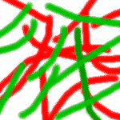
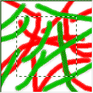
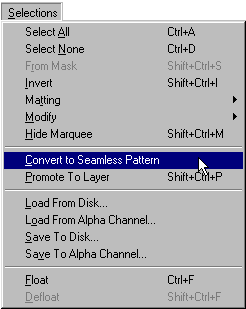
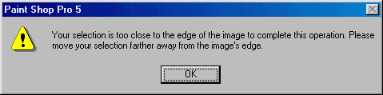
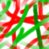

خاصية التجانب
Seamless Pattern
[المقدمة]
[لنتعرف...]
[الأدوات]
[الألوان]
[التحديد]
[إلغاء التدرج]
[New Image]
[فرشاة الرسم]
[التجانب]
[خلفيات الصفحات]
أهلاً وسهلاً بك في هذا الدرس... سوف تتعلم هنا كيفية عمل خلفيات جذابة لصفحات الويب باستخدام برنامجنا PSP... ولن يستلزم الأمر الدخول في أية أوامر معقدة أو صعبة. بل سوف تعتمد على معرفتك بأساسيات البرنامج واستخدام فرشاة الرسم فقط.
قبل كل شيء، دعنا نربط الأمور بين برنامجنا من جهة ولغة HTML والمتصفحات من جهة أخرى. ما نعرفه أن خلفية صفحة الويب هي عبارة عن صورة ما يتم تعريفها في بداية الملف مرة واحدة. ومهما كان قياس هذه الصورة فإن المتصفح يقوم بتكرار عرضها على الشاشة بصورة متجانبة ومتواصلة. (هذا ما عرفناه في الدرس الثاني من دروس HTML) وما نخلص إليه هو أنه سواءً كان قياس الصورة 1×1 بيكسل أو 800×500 بيكسل أو أي قياس يخطر على بالك فإن أسلوب عرضها في المتصفح لن يختلف. والشيء الوحيد الذي يستدعى أن تكون بأقل قياس ممكن هو تقليل حجم التخزين، وبالتالي تقليل الوقت اللازم لتحميلها في الصفحة أثناء استعراضها من قبل الزوار. فكل كيلوبايت إضافي يعني زيادة هذا الوقت.
ما أود أن تفهمه في هذا الدرس وفي غيره من الدروس التطبيقية هو أن الأمثلة المطروحة هي مجرد اجتهادات قائمة على الخبرة الشخصية، وهذه بالتأكيد تخطيء وتصيب. وقد يكون هناك الكثير من الأساليب الأفضل لأداء العمل، وقد تكتشف أنت خلال عملك في البرنامج الكثير من هذه الأساليب. وأرجو منك أن لا تتعامل مع ما تجده في هذه الدروس كمسلّمات غير قابلة للنقض.
وعلى أية حال دعنا نقسم خطوات العمل إلى ثلاثة فئات:
إختيارية: يكون لديك الحرية في العمل بها أو تعديلها حسب ما تراه مناسباً.
مفضلة: خطوات يفضل أداؤها لكي تحصل على النتيجة المرغوبة.
مطلقة: خطوات يجب عليك القيام بها وإلا لن تحصل على النتيجة المرغوبة.
ولن تجد صعوبة أبداً في التمييز بين هذه الفئات الثلاث.
لنفهم أولاً مسألة مهمة في تصميم خلفيات الصفحات... الأساس في تصميمها هو الوصول إلى صورة قابلة لأن توضع بشكل متجانب بحيث تظهر في حالتها هذه وكأنها صورة واحدة كبيرة تملأ الشاشة. وهذا يعرف بالمصطلح Seamless.
 والشكل المقابل يوضح صورة لا يمكن أن توصف بأي حال من الأحوال بأنها Seamless فهي غير قابلة للتجانب. (حسناً، أعرف أنك ستستخف بهذه الصورة بحجة أن أخاك الصغير ذو السنتين يستطيع رسم صورة أفضل منها بدرجات. لكن في يوم من الأيام سوف يكون بإمكانك عمل خلفيات مثل هذه أو هذه بإجراء بعض التعديلات الطفيفة على هذه الصورة نفسها. وعلى أية حال فهي تبدو مثالاً جيداً لمشكلة التجانب وكيفية حلها بواسطة برنامج PSP) السؤال الآن، لماذا لا تصلح هذه الصورة كخلفية للصفحة من الوجهة التصميمية؟ والجواب يظهر جلياً في الشكل التالي:
إنها تبدو أشبه برُقَع متراصة وغير متصلة كما أن حدودها واضحة ومميزة. فكيف الحل؟ يوفر البرنامج طريقة سهلة وسريعة للتغلب على هذه المشكلة وذلك من خلال أمر معيّن يقوم بتحويل الصورة لتصبح قابلة للتجانب، من خلال إجراء بعض الحسابات عليها وتحويل بعض الألوان والخطوط الأساسية الموجودة على حوافها. لكن سيستدعي الأمر التضحية بحوالي 30% من قياس الصورة الأصلي. (ليس مهماً طالما أننا سنصل في النهاية إلى نتيجة مدهشة). وإذا طبقنا هذه القاعدة على الصورة السابقة -علماً بأن قياسها 150×150 بيكسل- فإن الصورة الناتجة ستكون حوالي 100×100 بيكسل على التقريب.
والآن دعني أوضح لك كيفية استخدام هذا الأمر من خلال النقاط التالية:
كيف تجعل خلفية الصفحة قابلة للتجانب؟؟
قم بتحديد منطقة من الصورة بحيث لا تقل المسافة بين التحديد وحافة الصورة عن 15% على جميع الجوانب. (في مثالنا قمت بالتحديد من النقطة 25,25 وحتى النقطة 125,125).

إفتح قائمة Selections واختر الأمر Convert to Seamless Pattern منها.

في حالة كون المنطقة المحددة في الخطوة الأولى قريبة من الحافة أو أقل من 15% من حجم الصورة، تظهر رسالة خطأ من البرنامج بهذا المضمون وتطلب منك إبعاد التحديد أكثر عن الحافة.

بالتالي يقوم البرنامج بإجراء التعديلات المناسبة على الصورة وإنشاء صورة جديدة تلقائياً، ولا تنس أن تقوم بتسميتها وحفظها.

وهذه هي النتيجة:
أعتقد الآن أن بإمكانك وضع أي تصميم تريده وتحويله إلى خلفية لصفحتك بكل بساطة.

| إتش.بي بالعربية © 1998-1999 يحيى الشريف |
H.P in arabic © 1998-1999 Yahya Al-Sharif |